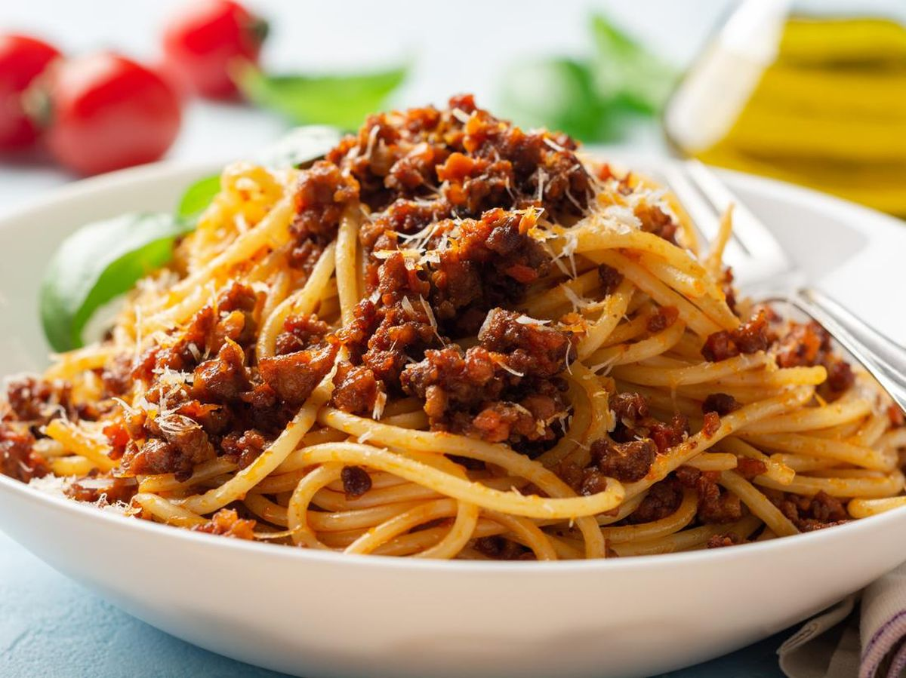

Spaghetti Bolognese

Description of Spaghetti Bolognese Recipe:
This spaghetti bolognese recipe is one that has an extra chunky sauce!
Ingredients:
- 100g of minced beef
- 50g of chopped champignon
- 25g of diced onions
- 2 tomatoes
- 1 jar of pre-made spaghetti tomato paste
- 200g of spaghetti pasta
- Salt
Steps
- Pour the entire jar of pre-made tomato paste into a pan and heat it up.
- Place all the minced beef, chopped champignon and onions into the pan. Let it simmer for 1 hour.
- Boil 300ml of water and sprinkle a pinch of salt in the water
- Once water is boiling, place spaghetti pasta into the boiling water and wait for 10 minutes.
- Seive out water and thoroughly dry the pasta.
- Place spaghetti pasta on a plate, and pour as much of the spaghetti sauce.
- If you have leftover spaghetti sauce, you can refrigerate it!